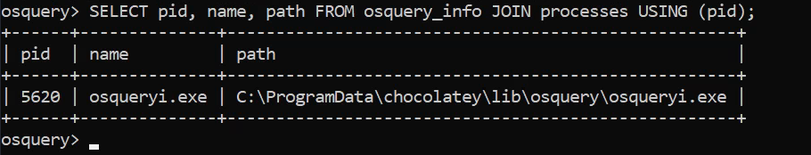

Osquery
Osquery
Osquery is an open-source tool created by Facebook. With Osquery, Security Analysts, Incident Responders, Threat Hunters, etc., can query an endpoint (or multiple endpoints) using SQL syntax. Osquery can be installed on multiple platforms: Windows, Linux, macOS, and FreeBSD.
Some of the tools (open-source and commercial) that utilize Osquery are listed below.
Alienvault: The AlienVault agent is based on Osquery.
Cisco: Cisco AMP (Advanced Malware Protection) for endpoints utilize Osquery in Cisco Orbital.
To Interact with the Osqury:
Command: osqueryi
Note: OSquery doesn't need elevated privileges for normal operation. However, to display all tables properly we need to start osquery from evelated shell.
To view help
Command: .help
Note: Any meta commands in Osquery use “.” to start

Tables & Schema
Command: .tables <Names>
Command: .schema <Table_Name>

Note: To check schema for another operating system, you'll need to use the --enable_foreign command-line flag.
Schema Documentation
https://osquery.io/schema/5.3.0/
We can view the documentations of all versions using the link.
Table For Osquery Version:
osquery_info
Creating Queries
The SQL language implemented in Osquery is not an entire SQL language that you might be accustomed to, but rather it's a superset of SQLite's.
Realistically all your queries will start with a SELECT statement. This makes sense because, with Osquery, you are only querying information on an endpoint or endpoints. You won't be updating or deleting any information/data on the endpoint.
Exception: The use of other SQL statements, such as UPDATE and DELETE, is possible, but only if you're creating run-time tables (views) or using an extension if the extension supports them.
Your queries will also include a FROM clause and end with a semicolon.
Example:
If you wish to retrieve all the information about the running processes on the endpoint.
Query: SELECT * FROM processes;
The number of columns returned might be more than what you need. You can select specific columns rather than retrieving every column in the table.
Query: SELECT pid, name, path FROM processes;
The count() function can be used to get exactly how many.
Query: SELECT count(*) from processes;
The output can be limited to the first 3 in ascending order by process name.
Query: SELECT pid, name, path FROM processes ORDER BY name LIMIT 3;
Optionally, you can use a WHERE clause to narrow down the list of results returned based on specified criteria.
Query: SELECT pid, name, path FROM processes WHERE name='lsass.exe';
In the above query we used “=” Sign. However, there are others
Below are filtering operators that can be used in a WHERE clause:
| Operator | Action |
|---|---|
| = | [equal] |
| <> | [not equal] |
| >, >= | [greater than, greater than or equal to] |
| <, <= | [less than or less than or equal to] |
| BETWEEN | [between a range] |
| LIKE | [pattern wildcard searches] |
| % | [wildcard, multiple characters] |
| _ | [wildcard, one character] |
Below is a screenshot from the Osquery documentation showing examples of using wildcards when used in folder structures.

Note: Some tables will require a WHERE clause, such as the file table, to return a value. If the required WHERE clause is not included in the query, then you will get an error.
JOIN
To join 2 or more tables, each table needs to share a column in common.
Let's look at 2 tables to demonstrate this further. Below is the schema for the osquery_info table and the processes table.

The common column in both tables is pid. A query can be constructed to use the JOIN clause to join these 2 tables USING the PID column.
Query: SELECT pid, name, path FROM osquery_info JOIN processes USING (pid);

Note: path was not in osquery_info table but due to the join with processes, we could query it.
Example Challenge:
What is the query to show the username field from the users table where the username is 3 characters long and ends with 'en'?
Query: SELECT username FROM users WHERE username LIKE ‘_en’;
Kolide Fleet
Open-source Osquery Fleet Manager. With Kolide Fleet, instead of using Osquery locally to query an endpoint, you can query multiple endpoints from the Kolide Fleet UI.
Orginal Github Repo (Retired in 2020): https://github.com/kolide/fleet
Latest Similar Open Source Repo: https://github.com/fleetdm/fleet
Note: The open-source repo of Kolide Fleet is no longer supported and was retired on November 4th, 2020. A commercial version, known as Kolide K2, is available at: https://www.kolide.com/launcher
Osquery Extentions
Extensions add functionality/features (i.e., additional tables) that are not included in the core Osquery. Anyone can create extensions for Osquery.
If you perform a search, you'll find some interesting ones that can be downloaded and implemented with Osquery with little hassle. Others might require extra steps, such as setting up additional dependencies and compiling the extension before use.
https://github.com/trailofbits/osquery-extensions
https://github.com/polylogyx/osq-ext-bin
Example Challenge:
Check all file hashes in the home directory for each user. One file will not show any hashes. Which file is that?
Query: SELECT path,filename,md5 FROM file JOIN hash USING (path) WHERE path LIKE "/home/%/%" ;
Example Challenge:
There is a file that is categorized as malicious in one of the home directories. Query the Yara table to find this file. Use the sigfile which is saved in '/var/osquery/yara/scanner.yara'. Which file is it?
Query: SELECT * FROM yara WHERE path LIKE '/home/%/%' AND sigfile='/var/osquery/yara/scanner.yara';
Example Challenge:
Scan a specified file with a yara rule file.
Query: SELECT path,matches,count,strings FROM yara WHERE path='/home/tryhackme/notsus' AND sigfile='/var/osquery/yara/scanner.yara';